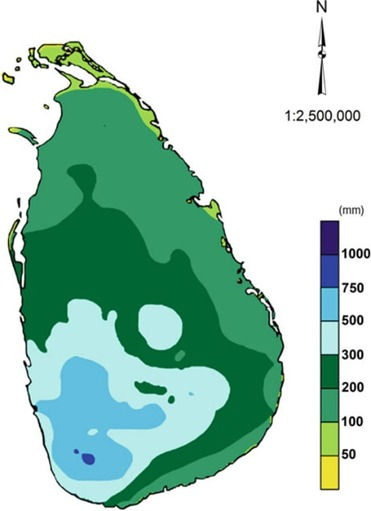
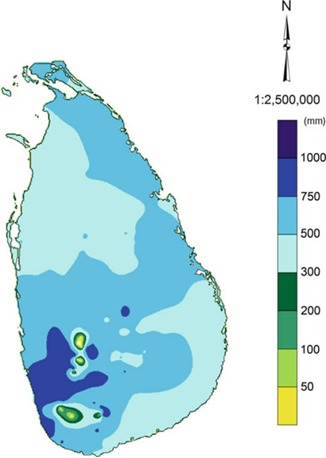

1. முதலாவது இடை மொன்சூன் (மார்ச் – ஏப்ரல்)
உருவாக்கம் (Formation):
நிலப்பரப்பு வேகமாக சூடாகி காற்று மேல்நோக்கி எழுந்து குளிர்ந்த மேகங்களை உருவாக்குகிறது. (Convectional Rain).
மேகங்கள்: பிற்பகல்/மாலை குறுகிய இடியுடன் கூடிய கனமழை.
பாதிக்கப்படும் பகுதிகள்:
- அதிக மழை: தென்மேற்குப் பகுதிகள் (கொழும்பு, காலி, மாத்தறை).
- நடுத்தர மழை: மத்திய மலைநாடு (கண்டி, நுவரெலியா).
- குறைந்த மழை: வடக்கு மற்றும் கிழக்கு மாகாணங்கள்.

2. தென்மேற்கு மொன்சூன் (மே – செப்டம்பர்)
உருவாக்கம் (Formation):
தென் அரைக்கோளத்திலிருந்து காற்று → இந்தியப் பெருங்கடல் → ஈரப்பதம் உறிஞ்சி மலைக்கு மோதுகிறது → கனமழை.
கிழக்கு வறண்ட பகுதிகளில் மழை குறையும் (Rain shadow).
பாதிக்கப்படும் பகுதிகள்:
- Wet Zone: கொழும்பு, காலி, இரத்தினபுரி, மலைநாட்டின் மேற்கு (2500-5000 மி.மீ).
- Dry Zone: யாழ்ப்பாணம், மன்னார், அனுராதபுரம் (< 1000 மி.மீ).
3. இரண்டாவது இடை மொன்சூன் (அக்டோபர் – நவம்பர்)
உருவாக்கம் (Formation):
வங்காள விரிகுடா, இந்தியப் பெருங்கடல் → தாழ் அழுத்த மண்டலங்கள் (Depressions) → நாட்டை நோக்கி ஈரமான மழை.
பாதிப்பு & அபாயங்கள்:
- பாதிப்பு: முழு நாடும் (தென்மேற்கு, மத்திய, வடக்கு, கிழக்கு).
- அபாயங்கள்: Flash Floods (வெள்ளப்பெருக்கு), Landslides (மண்சரிவு).

4. வடகிழக்கு மொன்சூன் (Northeast)
உருவாக்கம் (Formation):
தென் அரைக்கோளத்திலிருந்து காற்று → இந்தியப் பெருங்கடல் → ஈரப்பதம் உறிஞ்சி மலைக்கு மோதுகிறது → கனமழை.
மலைகளை தாண்டும் போது கிழக்கு வறண்ட பகுதிகளில் மழை குறையும்.
பாதிக்கப்படும் பகுதிகள்:
- Wet Zone: கொழும்பு, காலி, மாத்தறை, கேகாலை (2500-5000 மி.மீ).
- Dry Zone: யாழ்ப்பாணம், மன்னார், அனுராதபுரம் (< 1000 மி.மீ).
Dept. of Geography
University of Jaffna